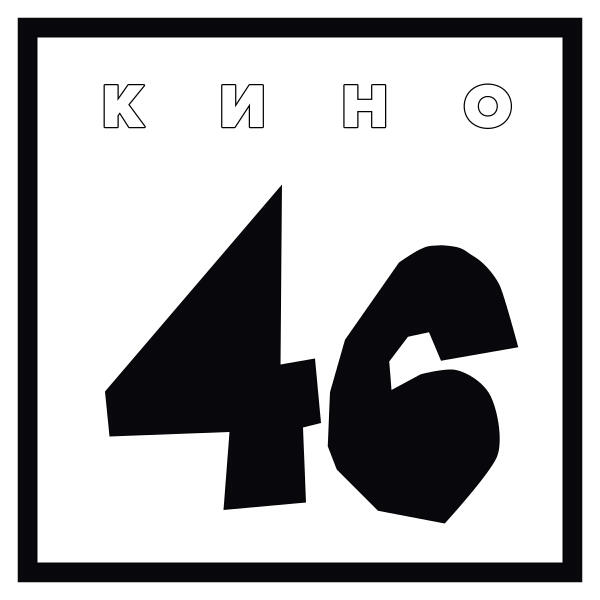

Дискография
Альбомы, определившие звучание группы «Кино» и оставившие след в истории русской рок-музыки.
Обзор альбомов
| Название |
Год |
Количество треков |
| 45 |
1982 |
3 |
| 46 |
1983 |
3 |
| Группа крови |
1988 |
3 |
| Последний герой |
1989 |
3 |
| Чёрный альбом |
1990 |
3 |
45 (1982)
Дебютный альбом группы, записанный совместно с Борисом Гребенщиковым. Именно с него начался путь группы на сцене ленинградского рока.
- Треки:
- Мои друзья — автор: Виктор Цой
- Электричка — автор: Виктор Цой
- 45 — автор: Виктор Цой

46 (1983)
- В наших глазах
- Троллейбус
- Это - любовь
Второй альбом группы, показавший развитие стиля и эксперименты с мелодикой и текстами.

Группа крови (1988)
- Группа крови
- Закрой за мной дверь, я ухожу
- Мама, мы все сошли с ума
Самый узнаваемый альбом, принесший группе всероссийскую славу. Символ перемен и свободы.

Последний герой (1989)
- Последний герой
- Следи за собой
- Печаль
Сборник, выпущенный для международной аудитории. Включает лучшие песни группы с нового мастеринга.

Чёрный альбом (1990)
- Кукушка
- Невесёлая песня
- Сказка
Посмертный альбом Виктора Цоя, завершён участниками группы. Тяжёлый и зрелый финал истории «Кино».